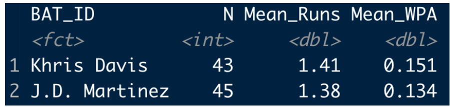

Clutch Performances
1 Introduction
These posts from the “Exploring Baseball Data with R” blog deal with clutch performances in baseball by teams and individuals.
Section 2 describes one method of defining clutch performances of hitters. We look at the mean runs value of plate appearances of hitters in scoring and non-scoring bases situations. One takeaway is that there appears to be a strong positive relationship between a player’s performance and his “clutch” performance.
Sections 3 and 4 focus on clutch performances of teams. Part 1 of this study relates the probability of scoring with the number of runners in scoring position. Using this measure, Part 2 compares the 30 teams with respect to clutch performance in scoring runs. One takeaway is that there is little evidence that teams have less or more ability to advance runners in scoring position.
Section 5 looks at the well-known Pythagorean formula and explores the residuals, the number of games won over what is expected by the Pythagorean relationship. We see a “extreme records” effect – for example, teams who are very successful tend to win more than expected from their R/RA ration.
Section 6 explores the clutch home runs hit during the 2018 season and Section 7 explores if there is any meaning of a pitcher’s win/loss record beyond the pitcher’s ratio of runs scored against the runs allowed. By itself, the pitcher’s W/L record is informative, but it is not that useful if one has many alternative measures of pitching performance.
Section 8 focuses on clutch performances of hitters. The RE24 measure is situation-dependent and that motives the consideration of a new measure that adjusts RE24 for the runners on base/outs situation. This post describes the construction of this new measure by use of a model that assummes that situation and performance are independent.
2 Clutch Performers in 2013
In the last post, I illustrated reading into R the 2013 Retrosheet play-by-play data. Also, I illustrated computing the run values of all plays using a function version of the R code from our book. Here we use this data to find the best clutch performers in the 2013 season.
We have a data frame d2013 containing all of the plays. We use the subset function to restrict attention to plays where there was a batting event (excluding events like attempted steals).
d2013 <- subset(d2013, BAT_EVENT_FL == TRUE)In my previous function, we added a new variable STATE which gives the current runners on base and the number of outs. We define a new variable Scoring.Position which is “yes” if there are runners in scoring position and “no” otherwise.
d2013$Scoring.Position <- with(d2013,
ifelse(STATE=="010 0" | STATE=="010 1" | STATE=="010 2" |
STATE=="011 0" | STATE=="011 1" | STATE=="011 2" |
STATE=="110 0" | STATE=="110 1" | STATE=="110 2" |
STATE=="101 0" | STATE=="101 1" | STATE=="101 2" |
STATE=="001 0" | STATE=="001 1" | STATE=="001 2" |
STATE=="111 0" | STATE=="111 1" | STATE=="111 2",
"yes", "no")
)For each batter, we want to compute the number of plate appearances and the mean runs value for batting plays when runners in scoring position, and for other plays. This is conveniently done using the new dplyr package.
library(dplyr)
RUNS.VALUE <- summarise(group_by(d2013, BAT_ID, Scoring.Position),
PA = n(),
meanRUNS = mean(RUNS.VALUE))Next, we use several applications of subset and merge to create a new data frame RUNSsituation. A given row will contain the PA and means runs for a given batter when runners are in SP and not-SP situations. We only consider hitters who have 100 PA’s in each situation.
RUNS.VALUE1 <- subset(RUNS.VALUE, PA >= 100)
RUNS.SP <- subset(RUNS.VALUE1, Scoring.Position=="yes")
RUNS.NSP <- subset(RUNS.VALUE1, Scoring.Position=="no")
RUNSsituation <- merge(RUNS.SP, RUNS.NSP, by="BAT_ID")We compute the Mean runs value and the Difference, the difference between the mean runs values in scoring position and non-scoring position situations.
RUNSsituation$Mean <- with(RUNSsituation,
(PA.x * meanRUNS.x + PA.y * meanRUNS.y) / (PA.x + PA.y))
RUNSsituation$Difference <- with(RUNSsituation,
meanRUNS.x - meanRUNS.y)The ggplot2 package is used to plot the mean (that we call Performance) against the difference (that we call Clutch). I plot abbreviated player codes so we can easily identify hitters.
library(ggplot2)
ggplot(RUNSsituation,
aes(Mean, Difference, label=substr(BAT_ID, 1, 4))) +
geom_text(color="blue") +
geom_hline(yintercept=0, color="red") +
geom_vline(xintercept=0, color="red") +
xlab("PERFORMANCE") + ylab("CLUTCH")From the plot we see that Miguel Cabrera and Chris Davis had the highest mean performances and Freddie Freeman and Allen Craig had the best clutch performances using our definition of clutch. B.J. Upton was one of the weakest performers (from a runs value perspective) and also was the worst clutch performers using this measure. What is interesting is that there is a pretty strong positive relationship between performance and clutch. So the best clutch performers tend to be the better hitters. So maybe in our search for clutch players one needs to adjust for level of performance.
3 Team Clutch Hitting - Part I
Suppose we’re interested in exploring clutch hitting in baseball. Essentially, scoring runs is a two-stage process – one puts runners on base and then advance them to home. Teams are especially interested in scoring runners who are in scoring position. We’ll use Retrosheet data and R to explore the relationship between runners in scoring position and runs scored. Specifically, is there a single number that we can use to summarize this relationship?
We begin by reading in the Retrosheet play-by-play data for the 2013 season. I earlier had created this worksheet by downloading all of the Retrosheet play-by-play files. (See the earlier post which described the process of downloading the Retrosheet files into R.)
load("pbp2013.Rdata")The variable HALF.INNING is a unique identifier for the game and half inning. Using the summarize function in the dplyr package, I create a new data frame S with two variables: RSP, the number of runners in scoring position, and RUNS the number of these runners who eventually score. (The variables BASE_2_RUN_ID, BASE3_RUN_ID, RUN2_DEST_ID, and RUN3_DEST_ID are helpful here.)
library(dplyr)
S <- summarize(group_by(d2013, BAT_TEAM, HALF.INNING), RSP = length(unique(c(as.character(BASE2_RUN_ID),
as.character(BASE3_RUN_ID)))) - 1, RUNS = sum(RUN2_DEST_ID >= 4) + sum(RUN3_DEST_ID >=
4))Using the cut() function I create a categorical variable Cat.RUNS which classifies the runs scored into the classes “0 Runs”, “1 Run”, etc. We use the subset function to only consider the situations when at least one runner is in scoring position.
S$Cat.RUNS <- cut(S$RUNS, breaks = c(-0.5, 0.5, 1.5, 2.5, 3.5, 1000), labels = c("0 Runs",
"1 Run", "2 Runs", "3 Runs", "4+ Runs"))
S.RSP <- subset(S, RSP >= 1)The table() function displays all counts for all values of RSP and Cat.Runs.
TB <- with(S.RSP, table(RSP, Cat.RUNS))
TB
## Cat.RUNS
## RSP 0 Runs 1 Run 2 Runs 3 Runs 4+ Runs
## 1 8817 1908 0 0 0
## 2 1662 2527 566 0 0
## 3 80 723 928 199 0
## 4 4 47 344 378 64
## 5 0 1 31 123 144
## 6 0 0 2 5 115
## 7 0 0 0 0 54
## 8 0 0 0 0 13
## 9 0 0 0 0 2We see, for example, there were 1908 half-innings where there was exactly one runner in scoring position and that runner scored.
The prop.table() function with argument 1 gives the row proportions of the table.
TB <- with(S.RSP, table(RSP, Cat.RUNS))
P <- prop.table(TB, 1)
round(P, 3)
## Cat.RUNS
## RSP 0 Runs 1 Run 2 Runs 3 Runs 4+ Runs
## 1 0.822 0.178 0.000 0.000 0.000
## 2 0.350 0.531 0.119 0.000 0.000
## 3 0.041 0.375 0.481 0.103 0.000
## 4 0.005 0.056 0.411 0.452 0.076
## 5 0.000 0.003 0.104 0.411 0.482
## 6 0.000 0.000 0.016 0.041 0.943
## 7 0.000 0.000 0.000 0.000 1.000
## 8 0.000 0.000 0.000 0.000 1.000
## 9 0.000 0.000 0.000 0.000 1.000For example, when there is one runner in scoring position (RSP=1), this runner will score with probability 0.178. When there are two runners in scoring position, both will score with probability 0.119, etc.
I’m interested in exploring the relationship between the number of runners in scoring position and the chance the team scores at least 1 run, the chance the team scores 2 or more runs, and the chance the team scores 3 or more runs. I create a new data frame with three variables Runners.SP, Probability, and Type.
P1plus <- 1 - P[1:5, "0 Runs"]
P2plus <- 1 - P[1:5, "0 Runs"] - P[1:5, "1 Run"]
P3plus <- 1 - P[1:5, "0 Runs"] - P[1:5, "1 Run"] - P[1:5, "2 Runs"]
d1 <- data.frame(Runners.SP = 1:5, Probability = P1plus, Type = "1+ Runs")
d2 <- data.frame(Runners.SP = 1:5, Probability = P2plus, Type = "2+ Runs")
d3 <- data.frame(Runners.SP = 1:5, Probability = P3plus, Type = "3+ Runs")
d <- rbind(d1, d2, d3)I use the ggplot2 package to plot line plots of P(scoring 1+ runs), P(scoring 2+ runs), and P(scoring 3+ runs) against the number of runners in scoring position.
library(ggplot2)
ggplot(d, aes(Runners.SP, Probability, color = Type)) + geom_line(size = 2) +
theme(text = element_text(size = rel(5))) + theme(legend.text = element_text(size = rel(4))) +
theme(legend.title = element_blank()) + labs(title = "Clutch Hitting - Probability Scale") +
theme(plot.title = element_text(size = rel(6), color = "red"))This is a tough graph to interpret since the curves are not linear – this is because the vertical scale (probability) has to fall between 0 and 1 and that causes the curves to have the S shape.
This is a nice way to improve this graph – we reexpress each probability to the logit scale. We create a new variable Logit = log (prob / (1 - prob)). This will be used to transform the P(scoring 1+ runs), P(scoring 2+ runs) and P(scoring 3+ runs). (It takes some practice to get used to thinking of logits. A probability less than 0.5 gets reexpressed to a negative logit, a probability larger than 0.5 gets changed to a positive logit. Probabilities fall between 0 and 1, while logits can take on any value from -infinity to +infinity.)
d$Logit <- with(d, log(Probability/(1 - Probability)))
d$Logit <- ifelse(is.infinite(d$Logit), NaN, d$Logit)Look what happens when we redraw the graph with the logit (instead of the probability) on the vertical scale.
ggplot(d, aes(Runners.SP, Logit, color = Type)) + geom_line(size = 2) + scale_y_continuous(limits = c(-3,
6)) + theme(text = element_text(size = rel(5))) + theme(legend.text = element_text(size = rel(4))) +
theme(legend.title = element_blank()) + labs(title = "Clutch Hitting - Logit Scale") +
theme(plot.title = element_text(size = rel(6), color = "red"))This is much easier to interpret since we see three parallel lines. On the logit scale, having one more runner in scoring position increases the probability of scoring 1+ runs by about 2.3. Also (since the lines have the same slope), the chance of scoring 2 or more runs increases (on the logit scale) by 2.3 for each additional runner in scoring position. A similar statement can be made about the chance of scoring 3 or more runs (on the logit scale).
In effect, we have reduced a discussion of clutch hitting to a single slope that relates the number of runners in scoring position to the logit of the probability of scoring x+ runs where x can be 1, 2, or 3. In a later post, we’ll use this idea to compare the clutch hitting abilities of the 30 teams.
4 Team Clutch Hitting - Part 2
Let’s return to my previous post where we were talking about clutch hitting – that is, the ability of a team to score runners who are in scoring position.
The question we want to focus on is this: do teams really differ in their ability to advance runners from scoring position to home?
Here’s the R work, reviewing what I did in the previous post.
Load in the Retrosheet play-by-play data for the 2013 season. Since we want to consider plays at the beginning of the inning – we use the subset function with the condition that LEADOFF_FL = TRUE.
load("pbp2013.Rdata")
d.inning <- subset(d2013, LEADOFF_FL==TRUE)As before, we create a data set with two variables: RSP = number of runs in scoring position and RUNS = the number of runners in scoring position who actually score. Since we are focusing on the process of advancing runners to home, we consider innings where there is at least one runner in scoring position.
library(dplyr)
S <- summarize(group_by(d2013, BAT_TEAM, HALF.INNING),
RSP=length(unique(c(as.character(BASE2_RUN_ID)
as.character(BASE3_RUN_ID)))) - 1,
RUNS=sum(RUN2_DEST_ID >= 4) + sum(RUN3_DEST_ID >= 4))
S$cruns <- cut(S$RUNS,
breaks=c(-.5, .5, 1.5, 2.5, 3.5, 1000),
labels=c("0 Runs", "1 Run", "2 Runs",
"3 Runs", "4+ Runs"))
S.RSP <- subset(S, RSP >= 1)As before, we tabulate runners in scoring position and runs scored.
with(S.RSP, table(RSP, cruns))
## cruns
## RSP 0 Runs 1 Run 2 Runs 3 Runs 4+ Runs
## 1 8817 1908 0 0 0
## 2 1662 2527 566 0 0
## 3 80 723 928 199 0
## 4 4 47 344 378 64
## 5 0 1 31 123 144
## 6 0 0 2 5 115
## 7 0 0 0 0 54
## 8 0 0 0 0 13
## 9 0 0 0 0 2A simple way to summarize the relationship in the table is by fitting an ordinal logistic regression model. One can write this model as \[ logit(Prob(R \ge c)) = \log\left(\frac{Prob(R \ge c)}{1 - Prob(R \ge c)}\right) = - \gamma_c + \beta x \] where \(R\) is the number of runs scored, \(x\) is the number of runners in scoring position, \(\beta\) tells us how much the logit of the probability (the left hand side of the equation) changes as you have one more runner in scoring position.
This model is easy to fit using the clm() function in the ordinal package. I show the estimate of \(\beta\) and the associated standard error.
library(ordinal)
fit <- clm(cruns ~ RSP, data=S.RSP)
c(beta=fit$coef[5], se=sqrt(vcov(fit)[5, 5]))
## beta.RSP se
## 2.39485 0.02485Since it is easy to think about this fitted model on the probability scale, I display the fitted probabilities of scoring 1+ runs, 2+ runs, 3+ runs, and 4+ runs as a function of the number of runners in scoring position. Notice I use the inverse logit function invlogit (in the arm package) to convert \(- \gamma_c + \beta x\) to a probability scale.
library(arm)
beta <- fit$coef[5]
gam <- fit$coef[1:4]
curve(invlogit(-gam[1] + beta * x), 1, 4,
ylim=c(0, 1), xlab="RUNNERS IN SCORING POSITION",
ylab="PROBABILITY")
for(j in 2:4)
curve(invlogit(-gam[j] + beta * x), add = TRUE)
text(c(2, 2.5, 3, 3.5), c(.7, .25, .15, .05),
c("1+ Runs", "2+ Runs", "3+ Runs", "4+ Runs"))This model fit gives us a general idea about clutch hitting – how the number of runners in scoring position translates to runs scored.
The interesting question is how do teams differ in clutch hitting?
We address this question by fitting this ordinal regression model separately to each team. We write a short function one.fit which does this for one team, and then the useful function sapply applies this function for all teams.
one.fit <- function(team, d, covariate){
fit <- clm(as.formula(paste("cruns ~", covariate)),
data=subset(d, BAT_TEAM==team))
b <- coef(fit)[5]
se <- sqrt(vcov(fit)[5, 5])
return(c(b, se))}
TEAMS <- unique(as.character(S.RSP$BAT_TEAM))
estimates <- sapply(TEAMS, one.fit, S.RSP, "RSP")
round(estimates, 2)
ANA ARI ATL BAL BOS CHA CHN CIN CLE COL DET HOU KCA LAN MIA
RSP 2.19 2.56 2.51 2.46 2.28 2.50 2.33 2.40 2.34 2.50 2.29 2.39 2.39 2.33 2.55
0.12 0.14 0.15 0.14 0.12 0.15 0.14 0.13 0.13 0.14 0.12 0.14 0.14 0.13 0.15
MIL MIN NYA NYN OAK PHI PIT SDN SEA SFN SLN TBA TEX TOR WAS
RSP 2.51 2.38 2.39 2.60 2.33 2.54 2.34 2.33 2.29 2.35 2.51 2.38 2.54 2.31 2.48
0.14 0.14 0.14 0.15 0.14 0.15 0.14 0.13 0.14 0.13 0.14 0.13 0.14 0.13 0.14Looking at the \(\beta\) estimates, one might think that teams differ in clutch hitting ability. For example, the Mets have a large \(\beta\) estimate of 2.60 which indicates they were strong in advancing runners in 2013 and Anaheim with an estimate of 2.19 appears to be poor in clutch hitting. But you have to look at these estimates relative to the standard errors.
Once we have computed a “clutch” estimate \(\hat\beta\), our knowledge about the true clutch ability \(\beta\) can be described by a normal curve with mean \(\hat\beta\) and standard deviation \(se\), where \(se\) is the standard error of the estimate \(\hat\beta\).
We plot all of these normal curves for the team clutch abilities \(\beta_1,... , \beta_{30}\) on the same graph.
curve(dnorm(x, estimates[1, 1], estimates[2, 1]),
1.5, 3.5, ylim=c(0, 4),
xlab="Beta", ylab="Posterior Density",
main="Team Estimates of Clutch Hitting")
for(j in 2:30)
curve(dnorm(x, estimates[1, j], estimates[2, j]), add=TRUE)What do we see? The bottom line is that there is a lot of overlap in these curves. This means there is little statistical evidence that teams actually have different abilities to advance runners in scoring position. Teams do differ in their abilities to get on-base, and in their abilities to get extra-base hits, but not in their abilities to perform well or badly in clutch situations.
5 Luck in the Pythagorean Theorem
5.1 Introduction
Last week, I was providing an introduction to baseball analytics to freshmen data science majors and I introduced the Pythagorean Theorem which relates runs to wins, I thought it would be interesting to revisit this relationship, focusing on teams that do better or worse than what is expected by Pythagorean, that is, the “luck” component.
5.2 The 2016 season
To get started, let’s look at the 2016 season. The Pythagorean relationship, on the log scale, can be written as
\[ \log(W / L) = k \log(R / RA) \]
(I express it this way since this is now a linear model and easy to fit using the R lm() function.) Below I plot values of \(\log(W/L)\) and \(\log(R/RA)\) for the 30 teams and overlay a least-squares line.
Here the estimated slope is 1.68. Teams that fall above the line are considered lucky in the sense that they won more games than one would expect based on the runs scored and allowed. Looking at the graph, Texas appeared to be lucky and Minnesota was unusually unlucky. The Cubs were extreme on their ratio of runs to runs scored, but their point falls a little below the line, indicating they were a little unlucky in terms of their W/L ratio.
This raises several questions:
- How has the Pythagorean slope changed over seasons?
- What is the general size of this luck component? That is, over many seasons, how many additional wins or losses to teams have based on “luck”? (Here I am using luck to describe the variation in wins/losses not explained by the R/RA ratio.)
- Are there possible explanations for the luck component?
5.3 Pythagorean slope
To see how the Pythagorean slope has changed over seasons, I fit this model for the past 50 seasons – here is a graph of the estimated slope against seasons.
In the days of low scoring like 1968, the estimate was small (1.6), and then the estimate showed a steady increase until 1990, steady from 1990 to 2005, and then has shown a decrease in recent seasons. What is actually remarkable is not the trend, but the high variability of the estimate – it appears that we don’t get a great estimate at this slope from data from a single season.
5.4 Size of the luck component?
In my model, the residual is relatively hard to interpret since the variables are on a log scale. So I focus on the residual
Residual = Actual Wins - Predicted Wins
So, for example, if Residual = 5, then this team has won 5 more games than one would expect based on the Pythagorean relationship. For each of my 50 seasons, I found all of the residuals – here is a density estimate of all of these residuals.
These residuals are bell-shaped and 85% of the values fall between -5 and 5. Thus it is pretty unusual for a team to win more than 5 or lose more than 5 games than expected. Only 2% of the residuals exceed 10 in absolute value. It is really unusual for a team to vary 10 or more than expected by the Pythagorean formula. (By the way, the 2016 Texas team actually had a residual value of 13 which was the most remarkable lucky season in this 50-season exploration.)
5.5 Explanations for the luck component?
Okay, what are some possible explanations for a team winning more games than expected?
- They win a lot of close games.
- They have great relievers who are good in preserving games.
- They are good in playing small ball, that is scoring the winning runs by singles, bunts, etc. in close games.
In the BR article referenced above, it says “Deviations from expected W-L are often attributed to the quality of a team’s bullpen, or more dubiously,”clutch play”; many sabermetrics advocates believe the deviations are the result of luck and random chance.”
I believe it has been shown that luck is not persistent in that a team that is lucky one season does not tend to be lucky the previous season. That is, there is a small association between the luck values for consecutive seasons.
But I’ll throw out one interesting thing that I found. Suppose we graph the residuals against the number of games won for all 50 seasons. I overlay a smoothing curve to see the pattern.
What this appears to show is a “team with extreme records” effect. Teams that are very successful (that is, win 95 or more games) tend to win more than one would expect based on the R/RA ratio. Conversely, poor teams tend to lose more than one would expect based on the Pythagorean relationship. For a team with 100 wins, it wins about 3 games more than expected.
5.6 Final comments
I think the general topic of Pythagorean residuals is interesting and deserves further exploration, For example, it would be interesting to examine the teams like the 2016 Rangers that had very lucky and very unlucky seasons and see if there are any common characteristics.
This study is easy to reproduce using Retrosheet game log data. I have downloaded the game log files for many seasons and it is easy to bring these files into R. Let me know if any of you are interested in seeing the R code for this exploration.
6 Clutch Home Runs
6.1 Introduction
One of the most popular posts in this blog has been the one giving instructions how to download the Retrosheet play-by-play files. Unfortunately, some people have struggled using the R functions that we describe in our text and this particular post. So I thought it would be helpful to describe a simple method of getting these Retrosheet files into R. Also I wrote a short package that facilitates computing the run values and associated win probabilities for all plays in a Retrosheet dataset. Once you have the Retrosheet data with the run values and win probabilities, you can do a lot of interesting explorations. Below I illustrate exploring the win probabilities of home runs during the 2018 season.
6.2 Downloading the Retrosheet Play-by-Play Data:
Here’s a simpler method. First, one double-clicks on the Retrosheet page to download a zip file containing all of the files for a particular season. (For the 2018 season, there will be 30 files in this compressed file, one corresponding to the home games for each team.) After you unzip the archive, then you run a Chadwick program at the Terminal level (type a single line) to put all of the data into a single csv file. This csv file can then be directly read into R by say the read_csv() function in the readr package.
I describe this process at the page below:
https://bayesball.github.io/VB/Simple_Retrosheet.html
6.3 Computing Run Expectancies and Win Probabilities
After one has downloaded the Retrosheet data, the next useful step is to compute the run expectancies and win probabilities for all plays. I made some small revisions to my R functions and put them in a new R package WinProbability. (Some description of my methods for computing the win probabilities can be found on the Part I and Part II posts.) Assuming you have downloaded Retrosheet data for a single season, one function in this package will add a header with variable names and compute the run expectancies. Another function will add the win probabilities to the Retrosheet dataset, and a third function will graph the win probabilities for a specific game of interest.
Here’s a description of installing the WinProbability package and doing these calculations:
https://bayesball.github.io/VB/WinProbabilities.html
6.4 Value of Home Runs?
To illustrate some work with the 2018 Retrosheet data, let’s explore the value of home runs hit in the 2018 season. In the runs expectancy chapter of our book, we looked at the run value of home runs – one takeaway is that the average run value of a home run is only about 1.4. Perhaps a more relevant measure of the value of a home run is the WPA or win probability added. The WPA, or more precisely the absolute value of the WPA tells us the benefit of the home run (that is, the increase in the team’s win probability) towards the ultimate goal of winning the game for the player’s team. Let’s explore the distribution of WPA across all home run hitters for the 2018 season
A reasonable graph is a scatterplot of the home run count (horizontal axis) against the average values of abs(WPA) (vertical axis) for all 2018 players. I’ve labelled some interesting points in this graph.
Brandon Phillips and Raimel Tapia each had only one home run in 2018, but these specific home runs really had an impact. Red Sox fan readers might recall Phillips’ dramatic 9th inning two-run home run in the Sox’ 9-8 win over the Braves on September. Likewise, Ramiel Tapia’s had a grand slam for the Rockies that led to their victory over the D-Backs. Each of these home run increased their team’s win probability by more than 40%.
D.J. LeMahieu had only 15 home runs in 2018, but he seems to stand out with respect to the average abs WPA – his home runs increased his team’s win probability by over 20% on average. This means his home runs seemed to occur at important moments during his team’s games.
We know Khris Davis bested J.D. Martinez with respect to the home run total (48 compared to 43). It is interesting to compare the values of these home runs. Below I display the mean run value and the mean abs(WPA) for both hitters.
What is interesting is that both players tended to average 1.5 run value per home run – a little above average. But Davis’ mean abs WPA is 0.033 higher than Martinez’s value. Let’s look at this more carefully by displaying parallel dotplots of the abs WPA values for the two players. Davis has more home runs than Martinez that increase his team’s probability of winning by 0.2 or higher.
6.5 Summing Up
All of the R code for this exercise can be found on my Github Gist site.
Can we conclude that Khris Davis is a “clutch” home run hitter, in the sense that he tends to hit his home runs during clutch situations? Actually, no. All I have demonstrated is that for the 2018 season, Davis’ home runs contributed more, on average, towards his team’s victories than other players such as J.D. Martinez. It might be better said that Davis was lucky in that he was given the opportunity to hit home runs in important situations.
Now if one could show that Davis’s home runs consistently contributed more towards team wins than other home run hitters, that would be more interesting.
To follow up this comments, it is easy to check if this same pattern held in the previous 2017 season. Okay, Davis also had a higher mean abs(WPA) value than Martinez in 2017, so this getting more interesting. (Actually Davis was also had a higher mean abs(WPA) value in the 2016 season.)

- But even if you could show Khris Davis’ is consistently clutch in this sense, I still wouldn’t be that excited by it. This reminds me of a Bill James’ statement that a situational effect is only meaningful if we understand the process that could cause this situational effect. In this setting, it would be hard to think of some reasoning or rationale that would cause Davis to more likely hit home runs in important situations.
7 Is a Pitcher’s Win/Loss Record Meaningful?
7.1 Introduction
I recently picked up the book State of Play by Bill Ripken at my local library. Ripken questions whether advanced statistics accurately reflect the reality of the game of baseball. I am currently reading Chapter 6 where Ripken has issues with the belief among the analytics community that pitching wins do not matter. In contrast, Ripken believes that a pitcher’s win/loss record is informative about a pitcher beyond his other pitching measures such as ERA, SO, BB, etc. Specifically, if you compare two similar pitchers Pitcher A and Pitcher B, where Pitcher A has a superior win/loss record, Ripken thinks that Pitcher A tends to perform well in clutch situations during a game. In my years of research on clutch situations in baseball, I think that beliefs in player clutch ability tend to be overstated, so I am not sure I would agree with Ripken’s statements. But I thought an exploration of the usefulness of a pitcher’s W/L record might lead to an interesting study.
To get started, I sent off an email message to Tom Tango asking for some guidance how to assess the value of a pitcher’s win/loss record. Tom was kind to offer the following quick response:
“W/L records are useful… if you have nothing at all. But once you have a pitcher’s RA/9, and you have his Run Support, THEN the W/L record might give you additional information. Maybe. So, figure out the Pythag record of a pitcher using his RA/9 and his run support, and compare that to his actual W/L record. Better at the career level.”
I will try out Tom’s idea and see what we learn about a pitcher’s W/L record beyond what would be predicted by the Pythagorean formula from the runs scored (R) and runs allowed (RA).
7.2 Data Work
I decided to focus on the career statistics for all pitchers who debuted in the 1955 season or later and had at least 250 pitching decisions (I wanted to include Sandy Koufax who had a sterling 165-87 career W/L record.). There were 171 pitchers in this group. The standard statistics using the Lahman database only include the runs allowed by the pitcher, not the runs scored by the pitcher’s team. So I went through all of the Retrosheet play-by-play season files. For each inning where the pitcher pitched, I collected the runs scored and the runs allowed. For convenience, I ignored the situation where the pitcher only pitched part of the inning – an inning was credited to a pitcher if he started the inning. For each pitcher in my group, I collect the career wins (W), losses (L), runs scored (R) and runs allowed (RA).
7.3 Sandy Koufax
Since I was originally thinking about Sandy Koufax, I have that Koufax had a 165-87 W/L record in his career. For the innings that he pitched, Koufax had 1152 runs scored and 846 runs allowed. Based on the Pythagorean relationship (to be described shortly), we will compute that, based on this runs data, Koufax is expected to win 160.3 games. So Koufax won 165 - 160.3 = 4.7 more games than expected.
7.4 Some Graphs
If you read “The Relation Between Runs and Wins” chapter in the Second Edition of Analyzing Baseball Data with R, you’ll see that there tends to be a linear relationship between the logarithm of the ratio of a teams wins and losses \(\log (W / L)\) and the logarithm of the ratio of a teams runs scored to runs allowed \(\log (R / RA)\). Baseball Reference indicates that the slope of this Pythagorean relationship is about 1.81. So I will graph a pitcher’s career \(\log (W / L)\) value against his career \(\log (R / RA)\) and overlay a line corresponding to the Pythagorean relationship. If a pitcher’s point in this graph is above the line, that indicates that he wins more games than would be anticipated by the runs/runs allowed data.
First I constructed a scatterplot for all pitchers with winning career records. Many of the points do follow the Pythagorean line. But I notice many pitchers with points below the line – these pitchers win less games than expected giving the runs data. There is one extreme pitcher Lindy McDaniel (point on the lower right) where his team scored 2040 runs while he allowed 859 runs – his 141-119 W/L record was much weaker than one would expect based on the runs data. (I think I should look more carefully at McDaniel’s data to see if this is correct.)
Since we are primarily interested in studying the better pitchers, I constructed a new scatterplot for those pitchers who won at least 55% of their game decisions. For these pitchers, the Pythagorean line seems to provide a good fit to the general pattern.
In this group of pitchers, let’s explore the residuals where I define a residual as
Residual = \(\log(W / L) - 1.81 \log (R / RA)\)
Here’s a graph of the residuals with a horizontal comparison line at 0. The large residuals in absolute value tend to be negative – there are a number of pitchers where the winning percentage is significantly smaller than the prediction based on the Pythagorean formula.

7.5 Some Unusual Pitchers
Here are some lists of the extreme residuals among the pitchers with at least a 55% winning percentage. To make these easier to understand, I express these residuals on the wins scale. The Pythagorean relationship can be written in terms of the proportion of wins P:
\(P = \frac{(R / RA)^{1.81}}{1 + (R / RA)^{1.81}}\)
By multiplying these proportions by the number of decisions (W + L), one obtains the expected number of wins for all pitchers. I first show a list of the top positive residuals – these are the pitchers who win (W) more than expected (EW) based on the runs data. Then I display the top negative residuals – these pitchers who win less than expected. On the top list, we see several great pitchers such as Randy Johnson and Roger Clemens – they won 13.6 and 11.2 more games than expected based on the Pythagorean model. In contrast, John Candelaria had by far the largest negative residual – he won 23.3 fewer games than expected from the model.
Pitcher W EW RW
<chr> <dbl> <dbl> <dbl>
1 Randy Johnson 303 289. 13.6
2 Bob Welch 211 200. 11.3
3 Roger Clemens 354 343. 11.2
4 Kevin Brown 211 200. 10.5
5 Dave McNally 184 177. 7.2
6 Don Sutton 324 317 7
Pitcher W EW RW
<chr> <dbl> <dbl> <dbl>
1 John Candelaria 177 200. -23.3
2 Jim Perry 215 238. -22.7
3 Fergie Jenkins 284 305. -21.3
4 Luis Tiant 229 247. -17.7
5 John Smoltz 213 229. -15.8
6 Don Drysdale 209 222. -13.17.6 Takeaways
Is a pitcher’s W/L record meaningful? Looking at pitcher career W/L records, the Pythagorean relationship appears to provide reasonable predictions of a pitcher’s winning percentage from his ratio of runs scored to runs allowed. The deviations from the Pythagorean relationship tend to be larger on the negative side – these pitchers win less games than predicted based on their career values of R and RA.
Interesting pitchers. One interesting takeaway was that the “extreme” pitchers tended to win fewer games than expected due to the Pythagorean relationship. By looking at the season-to-season performance of these pitchers, one may get additional insight on why they won fewer games.
Looking at wins at a finer level? Bill Ripken believes that the winning pitchers tend to make the good pitchers at crucial points during a game. A careful investigation of this claim would be a different study that focuses on the pitch values of specific games. Do better pitchers tend to throw good pitches during important situations?
My belief? I would agree with Tom Tango that a pitcher’s win/loss record by itself is informative about the quality of a pitcher. But this study doesn’t appear to help the case for the usefulness of a pitcher’s W/L record beyond the multitude of other pitching measures. One understands a pitcher’s W/L record by just seeing the runs scored and runs allowed. It is unfortunate that the media use a pitcher’s W/L record to decide on pitching awards – wins and losses are really a measure of the quality of a team rather than the quality of a particular starting pitcher.
8 Clutch Hitters in 2024 - A Runs Added Approach
8.1 Introduction
In Chapter 5 of our ABDWR book, we discuss the process of constructing the runs expectancy table that gives the average number of runs scored in the remainder of the inning for each bases/outs situation. Using these runs expectancies, one can find the runs value of any play. By accumulating these runs values over a season for each player, one obtains the player “Base-Out Runs Added” measure (abbreviated by RE24) that is given in the Player Win Probability table in Baseball Reference.
There are two types of performance measures described in Chapter 2 of Sean Smith’s WAR in Pieces book. (By the way, although I haven’t finished this book, I’d recommend this to anyone who wishes to learn about the components of the WAR measure.) Many of the measures like AVG, SLG, OBP, wOBA are context-neutral – they don’t depend on the situation (runners on base and number of outs) that the batters face. Other measures such as RE24 do depend on the context. Measures like RE24 and RBI give explicit credit for getting hits when there are runners in scoring position.
That raises a question. When you look at Corey Seager’s 2024 season value of RE24 = 35.4, how do you interpret this? Did Seager achieve these runs added because he was a good hitter, or maybe he was just good in hitting in clutch situations with runners on base? In other words, good hitting and clutch hitting are confounded in the construction of the RE24 measure. Is there a way of removing the clutch aspect from the RE24 measure to get a “context-neutral” adjusted RE24 that better reflects batter ability?
In this post, we’ll describe a simulation approach for removing the clutch component from the RE24 measure. In doing this, it will be possible to give a new measure of clutch performance. We’ll see that Seager actually was a clutch hitter in the 2024 season.
8.2 A Model for a Player Who Has Not Clutch Ability
We define a state as the runners on base and the number of outs – for example, the state “010 1” refers to the situation where there is a runner on 2nd and there is 1 out. For each of Corey Seager’s plate appearances, we collect the state and the outcome. (For the purposes of this description, we need to record only one of the 6 outcomes 1B, 2B, 3B, HR, BB, and Out, where BB includes a IBB, HBP or catcher interference.).
Suppose Seager is not clutch in that his chance of any PA outcome does not depend on the state. In this season, Seager had 81 singles, 21 doubles, 30 home runs, 53 walks, and the remaining outs, and all possible permutations of these outcomes are equally likely over the states. This suggests a simple way of obtaining a “clutch-free” RE24 measure:
Randomly permute the outcomes over the 533 states that Seager faced in this season.
Find the new states given the original states and the outcomes. (This requires a definition of runner advancement to be defined shortly.)
Compute the runs values using these state to new state transitions and runs scored.
Sum the runs values to obtain RE24.
Repeat this process many times to get many RE24 values. The mean of these RE24 values is my clutch-free RE24 estimate.
Since we are changing the outcomes over the states, we need to give a rule for runner advancement to obtain the new states. I use a simple rule where a single advances runners two bases and a double advances runners three bases. I certainly could improve this rule to make it more realistic, but I believe the clutch measure won’t depend much on this runner advancement definition.
8.3 Corey Seager
Let’s try this procedure for the 2024 Corey Seager. I run this permutation simulation 200 times, obtaining 200 values of RE24 under the “not-clutch” model. Here is a histogram of the RE24 values. If Seager truly is a non-clutch player where his outcomes don’t depend on the situation, we anticipate that he will get a RE24 measure in the high 20’s, although there is certainly uncertainty in these RE24 values.
8.4 A Measure of Clutch
We can take the mean of these simulated RE24 values to be the measure of RE24 adjusted for the situation. Here it turns out to be AVG = 28.3 runs added.
Actually (assuming my runner advancement definition), Seager contributed 41.0 runs this season which is shown by the black vertical line in the display. Seager was a good hitter in clutch situations where there were runners on base. We can measure clutch by a Z-score that subtracts the mean and divides by the standard deviation, where the mean and standard deviation are computed from this non-clutch model. Here we obtain
\[ Z = \frac{41.0 - 28.3} {5.6} = 2.27 \]
Actually Seager was very clutch in the sense that his observed runs was over 2 standard deviations over the mean under the non-clutch model.
8.5 Takeaways
I did apply this RE24 adjustment for all hitters in the 2024 season, but I think I’ll postpone that work for a future post. I think it is worth summarizing the main points here.
Some measures like RBI and RE24 depend on the situation (runners on base) and so it is hard to interpret these measures since they include both hitter ability and clutch performances.
It is desirable to adjust RE24 for the context to obtain a “context-free” measure of performance.
We propose a model where batting outcome is independent of the state. By simulating from the model, we obtain replicates of RE24 that don’t depend on the state.
This gives us a state-free RE24 measure to be mean of the simulated RE24 values from the model.
By compare the actual RE24 measurement with this state-free measure, we obtain a measure of clutch performance. Using this measure, we found that Corey Seager was very clutch in 2024.
Despite beliefs that players like David Ortiz and Reggie Jackson are clutch, clutch performances tend not to be predictive. So I have no reason to believe that Seager will be clutch in the 2025 season.
I’ve written a bit on clutch performances in baseball. This page collects many of my posts on clutch performances of players or teams.